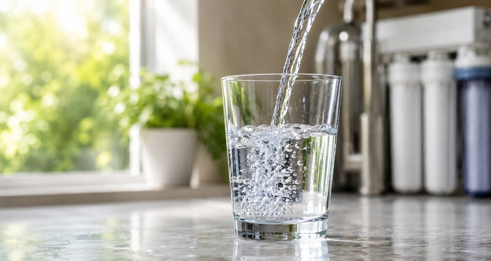

Professional Carbon Filtration Systems in Baton Rouge, LA
Pelican Water Pros installs carbon filtration systems for Baton Rouge homeowners who want fresher-tasting water and reduced chlorine or chloramine odor throughout the home. Carbon filtration is a practical option for city water concerns that affect showers, cooking, ice, and everyday tap use without requiring a more complex treatment setup in every case.

Fresher taste, cleaner water
Choose Pelican Water Pros for Professional Carbon Filtration Systems in Baton Rouge, LA
- Matched to Real Taste and Odor Concerns: Pelican Water Pros reviews whether chlorine, chloramine, or other common municipal-water issues are affecting kitchens, bathrooms, and laundry before recommending carbon equipment. That process helps homeowners avoid buying a system that treats the wrong problem or leaves lingering taste complaints unresolved.
- Installation Planned Around Your Plumbing: Pelican Water Pros places carbon filtration with attention to main-line access, bypass valves, and future cartridge or media changes. In Baton Rouge homes, that planning matters whether the system is going into a garage, utility closet, or outdoor equipment area with limited service space.
- A Strong Foundation for Whole-Home Comfort: Carbon filtration can improve how water smells and tastes at every fixture, supporting showers, dishwashing, and drinking water routines. Pelican Water Pros can also explain when carbon works well on its own and when pairing it with softening or reverse osmosis makes more sense.
Taste and odor matter daily
Why Professional Carbon Filtration Systems in Baton Rouge, LA Matter for Household Water
- Municipal Treatment Can Leave a Lasting Taste: City water is treated for safety, but chlorine and related compounds can still be noticeable at the tap. In Baton Rouge, LA, many households want a simple upgrade that makes morning coffee, ice, and showers feel cleaner without relying on bottled water.
- Comfort Shows Up in Small Routines: When water smells off, people notice it while washing dishes, bathing children, or filling pet bowls. Carbon filtration helps reduce those everyday irritations so the home’s water feels more inviting for regular use.
- It Pairs Well With Other Treatment: Carbon is often part of a broader water plan. Homes with hard water, sediment, or drinking-water concerns may benefit from combining carbon filtration with a softener or reverse osmosis system, and Pelican Water Pros helps sequence those choices clearly.

FREQUENTLY ASKED ・ ANSWERS TO YOUR QUESTIONS
Frequently Asked Questions About Carbon Filtration Systems in Baton Rouge, LA
What does Carbon Filtration Systems in Baton Rouge, LA typically improve first?
Many homeowners first notice better taste and less chlorine odor at kitchen and bathroom faucets. Pelican Water Pros explains what carbon can and cannot reduce so expectations stay realistic based on the home’s water source.
How often do Carbon Filtration Systems in Baton Rouge, LA need media or cartridge changes?
Replacement timing depends on water chemistry, household usage, and the type of carbon system installed. Pelican Water Pros reviews maintenance intervals during installation and helps owners plan service so performance stays consistent.
Can Carbon Filtration Systems in Baton Rouge, LA be used with city water and well water?
Carbon is commonly used on municipal water for taste and odor, and it can also support certain well-water setups when paired with the right pretreatment. Pelican Water Pros evaluates the source water before recommending carbon as a standalone solution or as part of a multi-stage system.
SERVICE AREA
Find Us
Pelican Water Pros installs carbon filtration systems throughout Baton Rouge for homes that want better-tasting, fresher water at every tap. From Mid City cottages to newer subdivisions in Zachary and Prairieville, Pelican Water Pros helps local households reduce chlorine taste and odor with practical carbon filtration designed around daily water use.